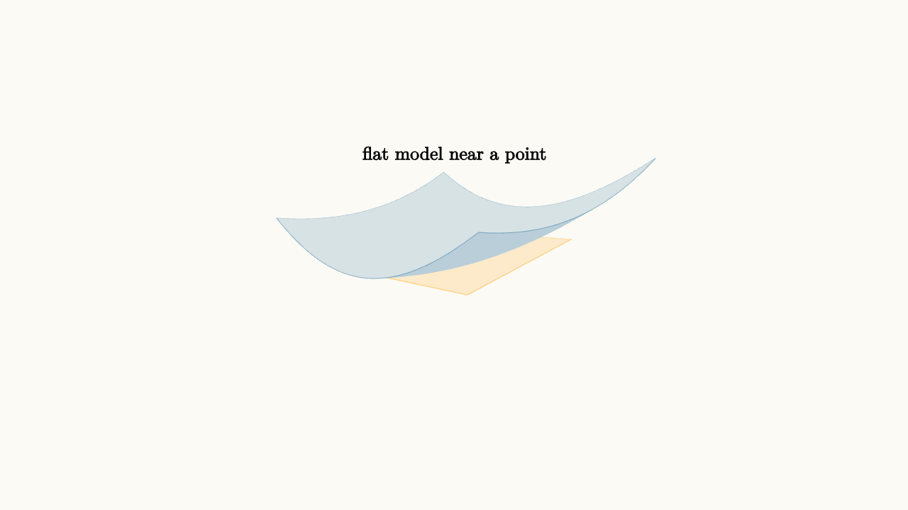

Tangent Planes Are Local Maps
A tangent line helps a curve by replacing it with a simple local model. A tangent plane does the same for a surface. Near a point, a smooth surface can be approximated by a tilted plane that matches the height and the two coordinate slopes.
For $z=f(x,y)$ near $(a,b)$, the tangent plane is
This is the two-variable version of linear approximation.

source
background = [0.985, 0.98, 0.955, 1]
camera = Camera([3.0, -3.0, 2.1], [0, 0, 0], [0, 0, 1])
let f = |x, y| 0.25 * x * x + 0.15 * y * y + 0.25 * x
let plane = |x, y| 0.25 * x
mesh diagram = block {
. fill{alpha{0.16} BLUE} stroke{alpha{0.38} BLUE, 0.7} ExplicitFunc2d(|x, y| f(x, y), [-1.4, 1.4, 26], [-1.2, 1.2, 26])
. fill{alpha{0.22} ORANGE} stroke{alpha{0.5} ORANGE, 0.8} ExplicitFunc2d(|x, y| plane(x, y), [-0.9, 0.9, 2], [-0.75, 0.75, 2])
. center{[0, 0, 1.05]} orient_to_camera{camera} color{BLACK} Text("flat model near a point", 0.62)
}The tangent plane has a practical meaning. If you move a small amount $\Delta x$ and $\Delta y$, the predicted height change is
The partial derivatives are the prices of small moves in each coordinate direction. Move a little in $x$, pay $f_x$ times that move. Move a little in $y$, pay $f_y$ times that move. Add the effects.
This addition is valid locally because smooth surfaces look flatter when you zoom in. Curvature still exists, but over a tiny region the linear part dominates.
source
background = [0.985, 0.98, 0.955, 1]
camera = Camera([3.0, -3.0, 2.1], [0, 0, 0], [0, 0, 1])
let f = |x, y| 0.25 * x * x + 0.15 * y * y + 0.25 * x
let plane = |x, y| 0.25 * x
"surface"
mesh surface = fill{alpha{0.15} BLUE} stroke{alpha{0.36} BLUE, 0.7} ExplicitFunc2d(|x, y| f(x, y), [-1.4, 1.4, 26], [-1.2, 1.2, 26])
mesh patch = []
mesh label = center{[0, 0, 1.15]} orient_to_camera{camera} color{BLACK} Text("surface", 0.68)
play Grow(0.8)
play Fade(0.4)
"plane"
patch = fill{alpha{0.24} ORANGE} stroke{alpha{0.55} ORANGE, 0.8} ExplicitFunc2d(|x, y| plane(x, y), [-0.9, 0.9, 2], [-0.75, 0.75, 2])
label = center{[0, 0, 1.15]} orient_to_camera{camera} color{BLACK} Text("tangent plane", 0.62)
play [Grow(0.7, [&patch]), Trans(0.8, [&label])]
"camera"
camera = Camera([2.1, 2.6, 1.8], [0, 0, 0], [0, 0, 1])
play CameraLerp(&camera, 1.2)The tangent plane can fail as a good model if the surface has a corner, cusp, or sudden crease. Partial derivatives alone do not guarantee a clean tangent plane in every pathological case. For the functions met in a first course, smooth formulas usually behave well, and the plane model is reliable near the point.
Tangent planes are also the gateway to optimization and error estimation. At a local maximum or minimum on a smooth interior point, the tangent plane is horizontal, so both partial derivatives are zero. For measurement errors, the linear approximation estimates how small input errors affect output error.
The geometry is simple: replace the surface with the plane that matches its height and immediate slopes. The closer you stay to the base point, the more useful the flat map becomes.